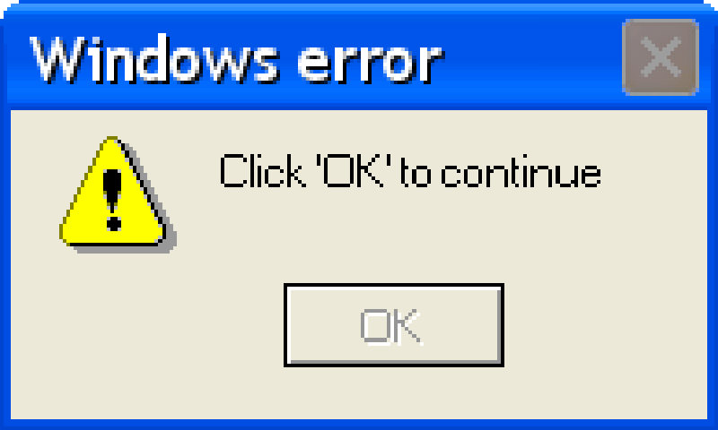

Breaking News: Bill Gates use ChatGPT for programming windows application
 Once upon a time, there was a young man named Bill Gates who had a passion for computer programming. He was fascinated by the endless possibilities of technology and spent most of his days tinkering with various computer programs. One day, Bill Gates had a vision of creating an operating system that would revolutionize the computer industry. He wanted to create something that was user-friendly, efficient, and accessible to everyone. He worked tirelessly on his project, often staying up all night to write code. Despite numerous setbacks and obstacles, Bill Gates refused to give up on his dream. He continued to work on his operating system, determined to make it the best it could be. And eventually, his hard work paid off. After months of coding and testing, Bill Gates Gates finally created the first version of Windows. It was a huge success and quickly became one of the most popular operating systems in the world. But Bill Gates's work was far from over. He continued to refine and improve Windows, constantly pushing the boundaries of what was possible with technology. He worked with a team of talented programmers to create new features and enhance the user experience. As Windows grew in popularity, Bill Gates became a household name. He was hailed as a visionary and a pioneer in the world of technology. People everywhere were using Windows on their computers, and it was changing the way we interacted with technology. And throughout it all, Bill Gates never forgot the passion that had driven him to create Windows in the first place. He continued to work tirelessly, always striving to make the best possible product and improve the lives of people all over the world. As for ChatGPT, it played a different role in the story. ChatGPT was a language model trained by OpenAI that Bill Gates Gates and his team used to help them with various tasks related to the development of Windows. ChatGPT was able to quickly process vast amounts of data and provide insights that were critical to the success of the project. Bill Gates and his team were amazed by ChatGPT's capabilities and relied on it heavily as they worked to bring Windows to life. They knew that without ChatGPT, their project would have been much more difficult and time-consuming. And so, thanks to the hard work of Bill Gates and his team, and the assistance of ChatGPT, Windows became one of the most successful operating systems in the history of technology. It changed the way we interact with computers and paved the way for countless innovations in the years to come.